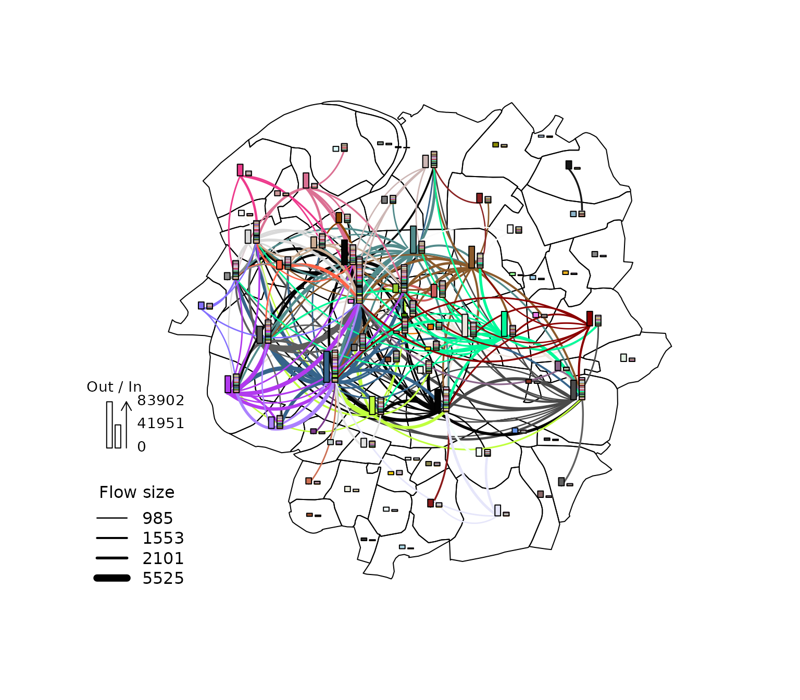
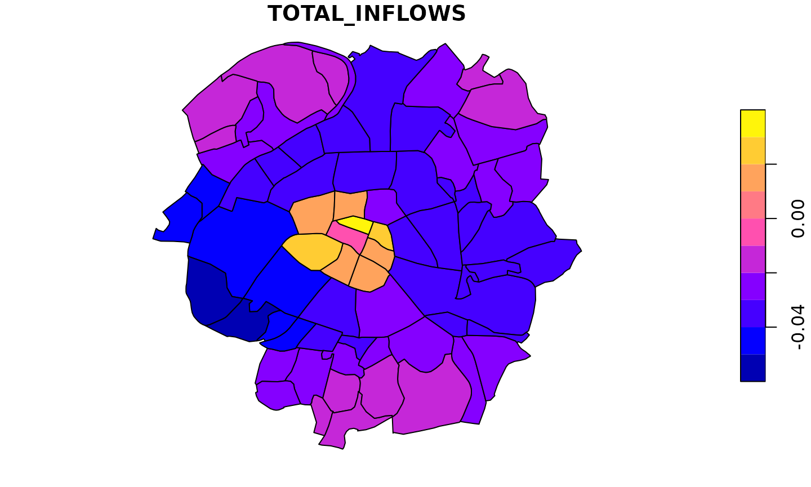

Home-to-work commuting flows within the municipalities around Paris
Source:vignettes/paris_commute_flows.Rmd
paris_commute_flows.RmdIntroduction
This article illustrates the use of the spflow
package for modeling spatial interactions using the example of
home-to-work commuting flows. For our example we use information on the
71 municipalities that are located closest to the center of Paris. This
data is contained in the package and was originally diffused by the
French National Institutes of Statistics and Economic Studies (INSEE),
and of Geographic and Forest Information (IGN). (For more information
see help(paris_data).)
Data presentation
Each municipality is identified by a unique id. Additionally, we have information on the population, the median income and the number of companies.
There are three different neighborhood matrices that can be used to describe the connectivity between the municipalities.
old_par <- par(mfrow = c(1, 3), mar = c(0,0,1,0))
mid_points <- suppressWarnings({
st_point_on_surface(st_geometry(paris10km_municipalities))})
paris10km_nb <- list(
"by_contiguity" = spdep::poly2nb(paris10km_municipalities),
"by_distance" = spdep::dnearneigh(mid_points,d1 = 0, d2 = 5),
"by_knn" = spdep::knn2nb(knearneigh(mid_points,3))
)
plot(st_geometry(paris10km_municipalities))
plot(paris10km_nb$by_contiguity, mid_points, add = T, col = rgb(0,0,0,alpha=0.5))
title("Contiguity")
plot(st_geometry(paris10km_municipalities))
plot(paris10km_nb$by_distance,mid_points, add = T, col = rgb(0,0,0,alpha=0.5))
title("Distance")
plot(st_geometry(paris10km_municipalities))
plot(paris10km_nb$by_knn, mid_points, add = T, col = rgb(0,0,0,alpha=0.5))
title("3 Nearest Neighbors")
par(old_par)Finally, there is data on the size of the commuting flows and the distance between all pairs of municipalities
head(paris10km_commuteflows)
#> ID_ORIG ID_DEST DISTANCE COMMUTE_FLOW
#> 1 75101 75101 0.000 3771.23556
#> 2 75101 75102 786.743 294.76899
#> 3 75101 75103 1729.063 71.25116
#> 4 75101 75104 1807.294 99.38468
#> 5 75101 75105 2266.598 98.88915
#> 6 75101 75106 1512.870 65.15406Modeling Spatial Interactions with spflow()
The spflow package builds on the idea that flows correspond to pairwise interactions between the nodes of an origin network with the nodes of a destination network.
In our example, the origin and destination networks are the same because every municipality is both an origin and destination of a flow.
To estimate the model efficiently, the spflow package uses moment-based estimation methods, that exploit the relational structure of flow data. This avoids duplication arising from the fact that each municipality is at the origin and destination of many flows. For more details on the model and the estimation methods see LeSage (2008), Dargel (2021) and Dargel (2022).
The spflow network objects
To describe the nodes of a network the package provides
spflow_network-class that combines attributes of the nodes
with the chosen network structure. For our model we choose the
contiguity based neighborhood structure.
paris10km_net <- spflow_network(
id_net = "paris",
node_neighborhood = nb2mat(paris10km_nb$by_contiguity),
node_data = paris10km_municipalities,
node_key_column = "ID_MUN")
paris10km_net
#> Spatial network nodes with id: paris
#> --------------------------------------------------
#> Number of nodes: 71
#> Average number of links per node: 5.239
#> Density of the neighborhood matrix: 7.38% (non-zero connections)
#>
#> Data on nodes:
#> ID_MUN POPULATION MED_INCOME NB_COMPANY AREA COORD_X COORD_Y
#> 1 75101 17100 31842.56 14333 182 2.34 48.86
#> 2 75102 22390 30024.5 14478 99 2.34 48.87
#> 3 75103 35991 30988 10696 117 2.36 48.86
#> 4 75104 27769 30514.67 7412 160 2.36 48.85
#> 5 75105 60179 32950 10290 252 2.35 48.85
#> 6 75106 43224 38447.69 10620 215 2.33 48.85
#> --- --- --- --- --- --- --- ---
#> 66 94046 54186 24329 3385 537 2.44 48.8
#> 67 94067 21846 31559.38 1763 90 2.42 48.84
#> 68 94069 14870 25790.65 957 144 2.43 48.82
#> 69 94076 56504 19447 2690 529 2.36 48.79
#> 70 94080 49831 30798 4655 191 2.43 48.85
#> 71 94081 88102 17860.5 4467 1166 2.4 48.79The spflow_network_pair-class contains all information
on the pairs of nodes belonging to the origin and destination
networks.
paris10km_net_pairs <- spflow_network_pair(
id_orig_net = "paris",
id_dest_net = "paris",
pair_data = paris10km_commuteflows,
orig_key_column = "ID_ORIG",
dest_key_column = "ID_DEST")
paris10km_net_pairs
#> Spatial network pair with id: paris_paris
#> --------------------------------------------------
#> Origin network id: paris (with 71 nodes)
#> Destination network id: paris (with 71 nodes)
#> Number of pairs: 5041
#> Completeness of pairs: 100.00% (5041/5041)
#>
#> Data on node-pairs:
#> ID_DEST ID_ORIG DISTANCE COMMUTE_FLOW
#> 1 75101 75101 0 3771.24
#> 2 75102 75101 786.74 294.77
#> 3 75103 75101 1729.06 71.25
#> 4 75104 75101 1807.29 99.38
#> 5 75105 75101 2266.6 98.89
#> 6 75106 75101 1512.87 65.15
#> --- --- --- --- ---
#> 5036 94046 94081 3742.08 218.66
#> 5037 94067 94081 6105.73 60.28
#> 5038 94069 94081 4535.03 102.04
#> 5039 94076 94081 2567.25 1067.62
#> 5040 94080 94081 7277.43 120.11
#> 5041 94081 94081 0 9257.91The spflow_network_multi-class combines information on
the nodes and the node-pairs and also ensures that both data sources are
consistent. For example, if some of the origins in the
spflow_network_pair-class are not identified with the nodes
in the spflow_network-class an error will be raised.
paris10km_multinet <- spflow_network_multi(paris10km_net,paris10km_net_pairs)
paris10km_multinet
#> Collection of spatial network nodes and pairs
#> --------------------------------------------------
#> Contains 1 spatial network nodes
#> With id : paris
#> Contains 1 spatial network pairs
#> With id : paris_paris
#>
#> Availability of origin-destination pair information:
#>
#> ID_ORIG_NET ID_DEST_NET ID_NET_PAIR COMPLETENESS C_PAIRS C_ORIG C_DEST
#> paris paris paris_paris 100.00% 5041/5041 71/71 71/71Given the information on origins, destinations and OD pairs we can
use the spflow_map() method for a simple geographic
representation of the largest flows.
plot(paris10km_municipalities$geometry) # polygons as background
spflow_map(
paris10km_multinet,
flow_var = "COMMUTE_FLOW",
add = TRUE, # add to existing background
legend_position = "bottomleft",
filter_lowest = .95, # concentrate on the 5% largest
remove_intra = TRUE, # intra-municipality flows are too large
cex = 1)
Before estimating a model we should investigate the correlation
structure of the input data. The pair_cor() method creates
a correlation matrix, which we can represent using the
cor_image(). The formula is used clarify which variables
should be included in the correlation matrix. The details of how to use
this formula are explained later in this vignette and documented in
?spflow.
Estimation
The core function of the package is spflow(), which
provides an interface to four different estimators of the spatial
econometric interaction model.
Estimating with default values
Estimation with default settings requires two arguments: a
spflow_network_multi-class and a
spflow_formula. The spflow_formula specifies
the model we want to estimate. In this example, the dependent variable
is a transformation of commuting flows and we use the do- shortcut to
indicate that all available variables should be included in the model.
Using the defaults leads to the most comprehensive spatial interaction
model, which includes spatial lags of the dependent variable, the
exogenous variables and additional attributes for intra-regional
observations.
results_default <- spflow(
spflow_formula = log(1 + COMMUTE_FLOW) ~ . + P_(log( 1 + DISTANCE)),
spflow_networks = paris10km_multinet)
results_default
#> --------------------------------------------------
#> Spatial interaction model estimated by: MLE
#> Spatial correlation structure: SDM (model_9)
#> Dependent variable: log(1 + COMMUTE_FLOW)
#>
#> --------------------------------------------------
#> Coefficients:
#> est sd t.stat p.val
#> rho_d 0.439 0.016 27.834 0.000
#> rho_o 0.796 0.010 82.408 0.000
#> rho_w -0.372 0.020 -18.226 0.000
#> (Intercept) -0.158 0.073 -2.168 0.030
#> (Intra) 6.179 0.296 20.908 0.000
#> D_POPULATION 0.000 0.000 4.254 0.000
#> D_POPULATION.lag1 0.000 0.000 -0.170 0.865
#> D_MED_INCOME 0.000 0.000 -2.422 0.015
#> D_MED_INCOME.lag1 0.000 0.000 6.300 0.000
#> D_NB_COMPANY 0.000 0.000 2.437 0.015
#> D_NB_COMPANY.lag1 0.000 0.000 2.542 0.011
#> D_AREA 0.000 0.000 6.368 0.000
#> D_AREA.lag1 0.000 0.000 -4.319 0.000
#> O_POPULATION 0.000 0.000 22.902 0.000
#> O_POPULATION.lag1 0.000 0.000 -5.740 0.000
#> O_MED_INCOME 0.000 0.000 0.609 0.542
#> O_MED_INCOME.lag1 0.000 0.000 0.192 0.848
#> O_NB_COMPANY 0.000 0.000 -5.610 0.000
#> O_NB_COMPANY.lag1 0.000 0.000 1.050 0.294
#> O_AREA 0.000 0.000 6.278 0.000
#> O_AREA.lag1 0.000 0.000 -4.951 0.000
#> I_POPULATION 0.000 0.000 -3.538 0.000
#> I_MED_INCOME 0.000 0.000 -8.722 0.000
#> I_NB_COMPANY 0.000 0.000 4.787 0.000
#> I_AREA -0.001 0.000 -5.401 0.000
#> P_log(1 + DISTANCE) NA NA NA NA
#>
#> --------------------------------------------------
#> R2_corr: 0.9110008
#> Observations: 5041
#> Model coherence: ValidatedAdjusting the formula
We can adjust how the exogenous variables are to be used by wrapping
them into the D_(), O_(), I_()
and P_() functions. The variables in P_() are
used as OD pair features and those in D_(),
O_() and I_() are used as destination, origin
and intra-regional features. We can take advantage of the formula
interface to specify transformations and expand factor variables to
dummies.
clog <- function(x) {
log_x <- log(x)
log_x - mean(log_x)
}
spflow_formula <-
log(COMMUTE_FLOW + 1) ~
D_(log(NB_COMPANY) + clog(MED_INCOME)) +
O_(log(POPULATION) + clog(MED_INCOME)) +
I_(log(POPULATION)) +
P_(log(DISTANCE + 1))
results_mle <- spflow(
spflow_formula,
paris10km_multinet)
results_mle
#> --------------------------------------------------
#> Spatial interaction model estimated by: MLE
#> Spatial correlation structure: SDM (model_9)
#> Dependent variable: log(COMMUTE_FLOW + 1)
#>
#> --------------------------------------------------
#> Coefficients:
#> est sd t.stat p.val
#> rho_d 0.213 0.019 11.150 0.000
#> rho_o 0.726 0.012 59.127 0.000
#> rho_w -0.022 0.024 -0.904 0.366
#> (Intercept) -0.809 0.289 -2.796 0.005
#> (Intra) 6.829 0.893 7.646 0.000
#> D_log(NB_COMPANY) 0.285 0.016 18.075 0.000
#> D_log(NB_COMPANY).lag1 -0.220 0.022 -10.099 0.000
#> D_clog(MED_INCOME) -0.343 0.051 -6.663 0.000
#> D_clog(MED_INCOME).lag1 0.509 0.073 6.959 0.000
#> O_log(POPULATION) 0.763 0.021 36.230 0.000
#> O_log(POPULATION).lag1 -0.649 0.031 -21.085 0.000
#> O_clog(MED_INCOME) -0.081 0.050 -1.631 0.103
#> O_clog(MED_INCOME).lag1 -0.006 0.066 -0.094 0.925
#> I_log(POPULATION) -0.422 0.082 -5.178 0.000
#> P_log(DISTANCE + 1) -0.073 0.022 -3.257 0.001
#>
#> --------------------------------------------------
#> R2_corr: 0.9207571
#> Observations: 5041
#> Model coherence: ValidatedFine-grained control with spflow_control()
More fine-grained adjustments are possible via the
spflow_control argument. Here we change the estimation
method and the way we want to model the spatial autoregression in the
flows. To use spatial lags only for certain variables, we need to
specify them as a second formula.
sdm_formula <- ~
O_(log(POPULATION) + clog(MED_INCOME)) +
D_(log(NB_COMPANY) + clog(MED_INCOME))
cntrl <- spflow_control(
estimation_method = "mcmc",
sdm_variables = sdm_formula,
model = "model_7") # restricts \rho_w = 0
results_mcmc <- spflow(
spflow_formula,
paris10km_multinet,
estimation_control = cntrl)
results_mcmc
#> --------------------------------------------------
#> Spatial interaction model estimated by: MCMC
#> Spatial correlation structure: SDM (model_7)
#> Dependent variable: log(COMMUTE_FLOW + 1)
#>
#> --------------------------------------------------
#> Coefficients:
#> est quant_025 quant_975 sd
#> rho_d 0.202 0.174 0.229 0.014
#> rho_o 0.723 0.698 0.745 0.012
#> (Intercept) -0.761 -1.328 -0.188 0.290
#> (Intra) 6.851 5.143 8.518 0.880
#> D_log(NB_COMPANY) 0.290 0.260 0.319 0.015
#> D_log(NB_COMPANY).lag1 -0.231 -0.267 -0.193 0.019
#> D_clog(MED_INCOME) -0.344 -0.448 -0.244 0.051
#> D_clog(MED_INCOME).lag1 0.505 0.361 0.652 0.073
#> O_log(POPULATION) 0.774 0.741 0.807 0.017
#> O_log(POPULATION).lag1 -0.667 -0.715 -0.621 0.024
#> O_clog(MED_INCOME) -0.082 -0.178 0.018 0.050
#> O_clog(MED_INCOME).lag1 -0.002 -0.137 0.127 0.065
#> I_log(POPULATION) -0.421 -0.578 -0.263 0.080
#> P_log(DISTANCE + 1) -0.067 -0.110 -0.023 0.022
#>
#> --------------------------------------------------
#> R2_corr: 0.9205982
#> Observations: 5041
#> Model coherence: ValidatedVisualisations to diagnose the fit
Calling plot(results_mcmc) would create a whole sequence
of graphics that allow to diagnose the fit. Here we concentrate on a
selection of these graphics. The pairwise correlations of the model data
show, for example, that the residuals and their spatial lags are not
correlated with the explanatory variables.
res_corr <- pair_cor(results_mcmc)
colnames(res_corr) <- substr(colnames(res_corr),1,3)
cor_image(res_corr)We can also create Moran scatter plots to check whether the residuals still exhibit spatial autocorrelation with respect to the three potential neighborhood matrices \(W_d\), \(W_o\) and \(W_w\).
old_par <- par(mfrow = c(1, 3), mar = c(2,2,2,2))
spflow_moran_plots(results_mcmc)
par(old_par)A quick investigation of the 2% residuals with largest magnitude reveals that long distances seem to be predicted with lower precision.
plot(paris10km_municipalities$geometry)
spflow_map(
results_mcmc,
add = TRUE,
legend_position = "bottomleft",
filter_lowest = .98, # concentrate on the 2% largest (in magnitude)
cex = 1) Looking at the relation between the distances and the error confirms
this impression. A more complex model could account for the increasing
variance by weighting the observations during the estimation. This could
be achieved using the weight_variable option in
spflow_control(), but is left out in this introductory
vignette.

Evaluating the impact of changing the input data
Finally we can evaluate the impact certain characteristics have on the outcome. Here we look at a scenario where the population in the central municipality is increased by 10%. As this has diverse effects on all flows we will first look at an image of the effect matrix. For a more detailed treatment of the effect decomposition in the spatial econometric interaction model see and .
center_mun <- "75101"
change_paris <- dat(paris10km_multinet, "paris")
change_paris <- change_paris[change_paris$ID_MUN == center_mun,]
change_paris[,"POPULATION"] <- change_paris[,"POPULATION"]*1.1
change_paris <- change_paris[,1:2] # keep the ID and the variable that changed
effect_matrix <- predict_effect(
results_mcmc, # the model
new_dat = list("paris" = change_paris), # changes in network "paris"
return_type = "M") # return in matrix form
# in the first row are those flows that go to the center
# in the first column are those flows that start from the center
image(effect_matrix)Here we see that flows starting from the center increase and flows that start from neighbors of the center to the center decrease. All other effects are very small. We can then have a closer look at the flows that start from the center or go to it. Additionally we look at all the internal flows, which decrease for all municipalities except for the center.

We can then look at the indirect effects on all flows that do not have the central municipality as origin or destination. To summarize these by total inflow and outflow we additionally set the internal flows to zero.
effect_matrix2 <- effect_matrix
diag(effect_matrix2) <- effect_matrix2[1,] <- effect_matrix2[,1] <- 0
plot(cbind("TOTAL_OUTFLOWS" = rowSums(effect_matrix2), paris10km_municipalities["geometry"]))
References
Dargel L, Thomas-Agnan C (2022). “A generalized framework for estimating spatial econometric interaction models.†TSE Working Paper, n. 22-1312, https://www.tse-fr.eu/publications/generalized-framework-estimating-spatial-econometric-interaction-models.
Goulard M, Laurent T, Thomas-Agnan C (2017). “About predictions in spatial autoregressive models: optimal and almost optimal strategies.†Spatial Economic Analysis, 304–325. https://doi.org/10.1080/17421772.2017.1300679.